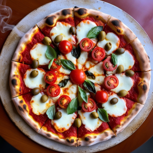

Receita de Pizza

Ingredientes:
Massa
- 500g de farinha de trigo
- 10g de fermento biológico seco
- 1 colher de chá de sal
- 1 colher de chá de açúcar
- 250ml de água morna
- 2 colheres de sopa de azeite
Molho
- 1 lata de tomate pelado
- 1 dente de alho picado
- 2 colheres de sopa de azeite
- Sal e orégano a gosto
Recheio
- 200g de queijo mussarela
- 100g de presunto (opcional)
- Azeitonas e orégano a gosto
Modo de Preparo
Massa
- Misture a farinha, o fermento, o sal e o açúcar.
- Adicione a água morna e o azeite, misture até formar uma massa homogênea.
- Sove a massa por cerca de 10 minutos e deixe descansar por 1 hora.
- Abra a massa em uma superfície enfarinhada e coloque em uma forma.
Molho
- Refogue o alho no azeite e adicione os tomates pelados.
- Cozinhe por 10 minutos, tempere com sal e orégano.
- Bata no liquidificador se quiser um molho mais homogêneo.
Montagem
- Espalhe o molho sobre a massa aberta.
- Adicione a mussarela, presunto, azeitonas e orégano.
- Asse em forno preaquecido a 220°C por cerca de 15-20 minutos.
- Retire do forno e sirva quente.
Fonte: Receita